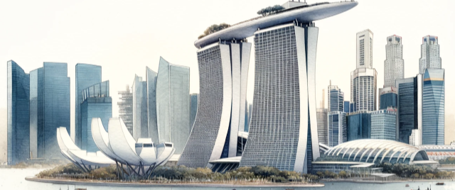

My name is Kushal Koneni, and I possess a profound fascination with architecture. One particular aspect of my admiration centers around high-rises and skyscrapers. The way they converge to create a grand, cinematic, larger-than-life appearance is truly astounding. I am deeply interested in researching and personally discovering the most impressive skylines. To me, the best skylines emerge when diverse buildings harmoniously blend together, especially when illuminated at night.
Charlotte
This was my initial attempt at assembling a skyline, and it's due for an update. I first hand-drew the eight skyscrapers and then integrated them into the skyline. My frequent trips to the central business district were primarily focused on observing each building from the specific perspective depicted. I also endeavored to include an abstract representation of the surrounding freeways downtown, featuring four express lanes and eight general lanes. Eventually, I aim to recreate this view of the skyline with enhanced detail and more precise depictions of the high-rises.
Skylines
I have a strong interest in both civil engineering and art. I am fascinated by the concept of expressing ideas in real, practical settings, as well as through abstract two-dimensional art. Additionally, I enjoy researching the architects behind buildings and exploring the processes involved in constructing skyscrapers. It's intriguing to understand the reasons behind a building's specific height and the rationale for every other detail.
Charlotte: Chapter Two
I personally believe that Charlotte boasts one of North America's most underrated skylines. A captivating feature of this skyline is the unique lighting patterns on many of its skyscrapers. The city has adopted a unified approach to illuminating these buildings, creating a vibrant nightscape. Charlotte is home to eight skyscrapers, with two more under construction, and a significant number of high-rises are also being developed. The downtown area of Charlotte is densely populated with tall buildings, yet it lacks a spread of mid-rise structures outward.
Era
From a young age, I have been fascinated by cityscapes. One of the reasons I could endure long road trips was the opportunity to catch a glimpse of any skyline. As a child, I didn't realize that there were even more fascinating skylines beyond the borders of the United States. It was only during my first plane ride to Frankfurt, Germany, that I realized I had merely scratched the surface. The skylines and architectural norms vary greatly, even just one country away.
Vancouver
My favorite skyline in the Western Hemisphere is that of Vancouver. It's the most uniform skyline, with buildings that are aesthetically pleasing on their own. However, when combined, the skyline appears vast. There are many architectural restrictions in British Columbia, Canada, which have significantly shaped the skyline's current appearance. The white buildings look incredible against the backdrop of the bay and the mountains.
Spot
In the future, my ambition is to invest in a high-quality drone, an essential tool for my passion in aerial photography. Utilizing a drone will enable me to experiment with different elevations and angles, offering a fresh and dynamic approach to capturing the beauty of landscapes and cityscapes from above. The concept of not being able to see large buildings from the ground, but then revealing a completely different perspective by flying a drone just a bit higher, is fascinating. I'll need to conduct extensive research to determine which drones are best suited for capturing images, particularly at night. Additionally, obtaining my drone license to enable more creative and advanced uses would be an exciting achievement.
Atlanta
Atlanta boasts a unique skyline characterized by three distinct major business districts, one of which hosts the largest secondary skyline in the United States. Its skyscrapers, notably tall on average, feature unique designs. However, the next tier of buildings, the high-rises, are markedly shorter in comparison. This noticeable height disparity, combined with the wide spread of the skyline, in my opinion, results in an overall lack of cohesion in the cityscape.
Atlanta, however, features an extensive spread of high-rises that branch out from its central business district, more so than is traditionally seen in other cities.
Passion
The United States set the standard in skyscraper construction, focusing on quality and innovation, but other countries have since taken the torch, building impressive structures of their own. However, the U.S. has seen a decline in skyscraper development, while countries like China rapidly expanded their skylines, sometimes prioritizing quantity over quality. Recently, China, a global leader in skyscraper construction, imposed new restrictions to address concerns about the quality and sustainability of these buildings. This marks a global shift towards balancing rapid urban development with long-term safety and environmental goals. Nonetheless, the U.S. remains renowned for its commitment to high-quality architectural standards.

Singapore
Singapore's skyline is undoubtedly my favorite among those I've seen in person internationally, and it may even rank as my top favorite overall. Singapore's skyline stands out for its harmonious blend of modern architectural marvels and lush greenery, creating a unique and sustainable urban landscape. The iconic Marina Bay Sands, with its distinctive design, adds a futuristic touch and has become a symbol of the city's innovation and luxury. The skyline is further enhanced by the Singapore Flyer and the Supertree Grove at Gardens by the Bay, which offer breathtaking views and blend technology with nature. Additionally, the careful planning and integration of water bodies, like the Singapore River, add a serene and picturesque quality, making Singapore's skyline not only visually stunning but also a testament to thoughtful urban design.